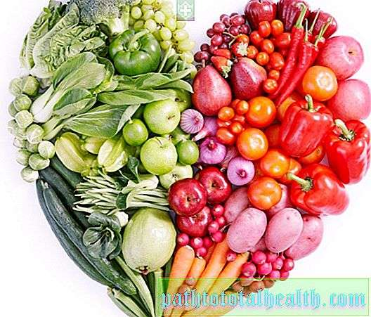

Welcome to tinkamos mitybos maistas
13 tinkamos mitybos taisyklių | Kompetentiškai apie sveikatą iLive
2020.10.30 03:10
^ Naujienos Sveikata Šeima ir vaikai Mityba ir mityba Grožis ir mada Santykiai Sportas Apie portalą
Sveikata
Diagnostika Kompiuterinė tomografija MR diagnostika Medicininiai manipuliacijos Kūno tyrimas Endoskopija (endoskopija) Radionuklidų diagnostika Rentgeno spinduliai (rentgeno studijos) Ultragarsinė diagnostika (ultragarsu) Gydymas Operacijos Medicinos specialybės Ligų gydymas Vaistų apžvalga Alternatyvi medicina Kamieninių ląstelių Fizioterapija Kraujo perpylimas Transplantacija Ligos Nėštumas, gimdymas ir vaikelis Sindromai Chirurginės ligos Dantų ligos (stomatologija) Pieninių liaukų ligos (mamolija) Sąnarių, raumenų ir jungiamojo audinio ligos (reumatologija) Vėžys (onkologas) Imuninės sistemos ligos (imunologija) Kraujo ligos (hematologija) Širdies ir kraujagyslių ligos (kardiologija) Psichikos sveikata (psichiatrija) Traumos ir apsinuodijimai Odos ir poodinio audinio ligos (dermatologija) Plaučių, bronchų ir pleuros liga (pulmonologija) Ausų, gerklės ir nosies ligos (otolaringologija) Endokrininės sistemos ligos ir medžiagų apykaitos sutrikimai (endokrinologija) Lytiniu keliu plintančios infekcijos (lytiniu būdu plintančios ligos) Ginekologinės ligos (ginekologija) Akių ligos (oftalmologija) Vaikų ligos (pediatrija) Kepenų ir tulžies takų ligos Tiesiosios žarnos ir analinių sričių ligos Nervų sistemos ligos (neurologija) Virškinimo trakto ligos (gastroenterologija) Infekcinės ir parazitinės ligos Urogenitalo sistemos ligos Analizuoja Analizuoja hormonus Hematologiniai egzaminai Genetiniai tyrimai Narkotikų apibrėžimas Prenatalinė diagnozė PCR (polimerazės grandinės reakcija, PCR diagnostika) Serologiniai tyrimai Toksikologiniai tyrimai Onomarkeriai Autoimuninių ligų diagnozė Imunitetas Hemostazės sistemos tyrimai Fermentų ir izofermentų tyrimas Narkotikų stebėsena Mikroelementai Pigmento keitimo kursai Lipidai, lipoproteinai ir apolipoproteinai Klinikiniai tyrimai Baltymai ir baltymų frakcijos Angliavandeniai Populiarus apie svarbų Cukrinis diabetas Poilsis ir gydymas Izraelyje Gripas ir šaltis Hemorojus Prostatitas Osteoartritas Stuburo osteochondrozė Nugaros skausmas Vidurių užkietėjimas Glaukoma Jūsų kojų sveikata Skiepijimas Alergija Psoriazė Pigmentinės dėmės ir kruopos Burns Gone Climax Poilsis ir reabilitacija Vaistiniai preparatai Anatomija Simptomai Skausmas Pagrindinis » Sveikata » Populiarus apie svarbų » Vidurių užkietėjimas » Bendra informacija apie vidurių užkietėjimąMedicinos ekspertas
Daktaras Maor LAHAV GastroenterologasNaujos publikacijos
Chroplastika Stazinis prostatitas Pleiskanos ausyse: kodėl jos atsiranda, kaip jas gydyti? Klavikulo lūžis naujagimiui gimdant Paracetamolis ir alkoholis: kodėl bendras vartojimas yra pavojingas? Apsinuodijimas žuvies konservais, mėsa ir daržovėmis13 tinkamos mitybos taisyklių
Aleksejus Portnovas , Medicinos redaktoriusPaskutinį kartą peržiūrėta: 11.04.2020 х
Visas „iLive“ turinys yra peržiūrėtas medicinoje arba tikrinamas, kad būtų užtikrintas kuo didesnis faktinis tikslumas.
Mes turime griežtas įsigijimo gaires ir susiejamos tik su geros reputacijos žiniasklaidos svetainėmis, akademinių tyrimų institucijomis ir, jei įmanoma, medicininiu požiūriu peržiūrimais tyrimais. Atkreipkite dėmesį, kad skliausteliuose ([1], [2] ir tt) esantys numeriai yra paspaudžiami nuorodos į šias studijas.
Jei manote, kad bet koks mūsų turinys yra netikslus, pasenęs arba kitaip abejotinas, pasirinkite jį ir paspauskite Ctrl + Enter.
Norint, kad maistas patektų į jūsų naudą, o ne sukelti per didelį svorį ir prastą sveikatą, reikia tinkamai valgyti. Kokios yra tinkamos ir pagrįstos mitybos taisyklės?
[ 1 ]
Neskubėkite
Kuo kruopščiau kramtysite maistą, tuo geriau jis absorbuojamas, o mažiau riebalų nuosėdų bus ant jūsų šonų ir juosmens. Kai kramtomasis maistas sudrėkintas seilėmis ir taip virškinamas greičiau. Seilėse yra medžiagų, galinčių naikinti mikrobus, tokiu būdu maistas dezinfekuojamas. O seilėje yra fermentų, kurie yra būtini pirminiam maisto virškinimui. Be to, gerai kramtomas maistas yra lengvas nuryti, jis nesisikrauna į gerklę nemalonus vienkartinis.
[ 2 ], [ 3 ]
Valgykite režimu
Valgydami reguliariai tuo pačiu metu, kūnui tenka drausti ir palengvinti jo virškinimą. Geriausia valgyti mažiausiai 5-6 kartus per dieną mažomis porcijomis. Taigi virškinimo sistema nebus perkrauta, galės suvirinti ir asimiliuoti maistą tolygiai.
Negalima užpildyti nakties
Kai užpildote ir tada einate miegoti, virškinimo sistema, o ne poilsis, veikia intensyviai. Skrandis ir žarnynas susidėvėjo ir negali gerai atlikti savo funkcijų, jas prižiūrėti ir perkrauti.
[ 4 ], [ 5 ], [ 6 ]
Atsisakykite valgyti sausą maistą
Kai nuplaunate maistą, jūs padedate jam geriau įsisavinti. Tiesa, daugelis dietologų nerekomenduoja geriamojo vandens su maistu. Geriau prieš valgydami košė, pašildykite virškinimo sistemą lengva sriuba ir salotomis. Skystis paskatins likusį maistą per virškinamąjį traktą.
[ 7 ], [ 8 ], [ 9 ], [ 10 ], [ 11 ], [ 12 ], [ 13 ]
Laikykitės laiko
Pakilkite nuo stalo ne tada, kai nebegalėsite kvėpuoti nuo persivalgymo, bet su jausmu, kad alkis. Jei kyla iš stalo su pilvo skrandžio jausmu, tai yra ženklas, kad padarėte klaidą, kaip jūs valgėte. Baigę valgyti, skrandis neturėtų jaustis tuščias, bet jis neturėtų būti pilnas. Paimkite įprotį valgyti lėtai, tai užtrunka apie 20 minučių, kol smegenys gauna „aš nenoriu jo daugiau“ signalo iš skrandžio.
[ 14 ], [ 15 ], [ 16 ], [ 17 ]
Valgykite tik tada, kai esate alkanas
Šiuolaikinė kultūra teigia, kad žmogus gali alkanas apytiksliai 9 ryte, 12 val. Po pietų ir vėl 6 val. Vakare. Tai gali būti tiesa, bet vis tiek prisiminkite, kad jūs neturėtumėte valgyti pietų metu, jei nesate alkani, ir vakare. Jei esate alkanas tarp valgių, užkandžiai užkandžiai. Tai blogai badauti sau tarp maitinimo, nes. Kai eilė pagaliau ateina į maistą, užsukite ant jo dvigubu apetitu ir būtinai viršykite porcijas. Valgykite klausydamiesi savo kūno.
[ 18 ]
Sumažinkite porcijas
Jūsų dalys gali būti per didelės ir net nepastebėsite. Remiantis tyrimais, per pastaruosius 50 metų porcijos beveik padvigubėjo. Atminkite, kad per šį laiką skrandis neužaugo. Neturėtume tikėtis, kad daugelis produktų virškins skrandį be neigiamų pasekmių. Daugelis žmonių nesupranta, kad jūsų skrandis ištęs, jei pripratę valgyti daug. Jei valgote nedidelį kiekį maisto, tuo metu skrandis neužteks, nes tai atsitinka, kai užklijuojate didelius pietus. Prieš pakeldami iš stalo, duokite sau 10–20 minučių. Jei po to laiko iš tiesų vis dar alkanas, valgykite šiek tiek daugiau.
[ 19 ], [ 20 ], [ 21 ]
Valgykite pusryčius kiekvieną dieną.
Jūsų metabolizmas pradeda aktyviai veikti anksti ryte (naktį jis sulėtėja, nes šiek tiek nevalgote). Taip pat pasimėgaukite, kūnas išnaikins šį maistą daug lengviau nei vakare, ir jūs nesukelsite geresnio.
[ 22 ], [ 23 ], [ 24 ]
Būkite fiziškai aktyvūs
Tai vėl pagreitina medžiagų apykaitą, jau nekalbant apie tai, kad ji degina kalorijas. Pratimai taip pat didina virškinimo proceso aktyvumą, pagreitina virškinimą. Norėdami gauti viską, ką galite, nuo treniruotės, stenkitės sujungti sporto salę su darbu, pvz., Važiuoti bėgimo taku, ir svorio kėlimą su malonumu, taip pat dviračiais, žygiais ar futbolu. Pratimai taip pat gali padėti jums įvertinti, ar esate alkanas.
[ 25 ], [ 26 ], [ 27 ], [ 28 ], [ 29 ], [ 30 ], [ 31 ], [ 32 ], [ 33 ], [ 34 ]
Negalima fantazuoti apie maistą
Tai įrodyta, kad žiūrėdami televizorių norite daugiau valgyti. Taip yra todėl, kad visi šie skanius reklaminius skelbimus atidžiai išnagrinėjami puikiai virti patiekalai. Perjunkite kanalą, jei televizoriaus ekrane yra per daug kalorijų. Kaip paskutinė išeitis, valgykite šviežių braškių, o ne eikite į riebalų kepti vištieną. Tai išgelbės jūsų kūną ir nervus.
[ 35 ]
Negalima gauti kalorijų iš gėrimų
Gera mintis gerti tik vandenį ar mažai kalorijų turinčius gėrimus, pvz., Arbatą ar kavą. Saldūs gėrimai ir sultys gali pridėti šimtus kalorijų į savo mitybą, ir netgi nejausite. Iš esmės gėrimai su dujomis ir cukrumi kompozicijoje jums nieko nedaro, išskyrus troškulį nuraminti ir kalorijas pridėti prie paskyros visą dieną.
[ 36 ], [ 37 ], [ 38 ]
Sudėkite ant papildomos plokštelės
Uždėkite papildomą plokštę ant stalo ir palikite ant jo maistą, kurį rytoj nevalgėte. Po šių manipuliacijų jums nereikės priversti valgyti to, ko nenorite, ir suprasite, kad jūsų pietų ar vakarienės dalis yra per didelė. Paprastai tai tiesiog ignoruojate, bet šį kartą galėsite iškrauti skrandį nuo perteklinio maisto ir galbūt išvengti pūtimo pojūčio.
[ 39 ]
Negalima laikyti iliuzijų apie savo figūrą
Palyginkite save su televizoriaus modeliais ir menininkais. Dauguma žmonių niekada nebus tokie puikūs, kaip jie yra tobuli (jei tik jūs galite sau leisti asmeninį trenerį ir dietologą dirbti su jumis kelias valandas kiekvieną dieną). Vietoj to, geriau sutelkti dėmesį į Jums tinkamiausią sveiką gyvenimo būdą.
Šiose taisyklėse nėra nieko naujo, jie visiems žinomi. Tuo tarpu daugelis žmonių dažnai jų nepaiso, matyt, nesvarstydami pasekmių. Norėdami suprasti šių rekomendacijų fiziologinį poveikį tinkamam mitybai, patikrinkite, kaip jie veikia.
[ 40 ], [ 41 ], [ 42 ]
Mobiliosios svetainės versija iLive portāls nesniedz medicīnisku padomu, diagnostiku vai ārstēšanu.
Portālā publicētā informācija ir tikai atsauce, un to nedrīkst izmantot, konsultējoties ar speciālistu.
Uzmanīgi izlasiet vietnes noteikumus un politiku . Taip pat galite susisiekti su mumis !
Autortiesības © 2011 - 2020 iLive. Visas tiesības aizsargātas.
Next page
You are reporting a typo in the following text: Simply click the "Send typo report" button to complete the report. You can also include a comment.